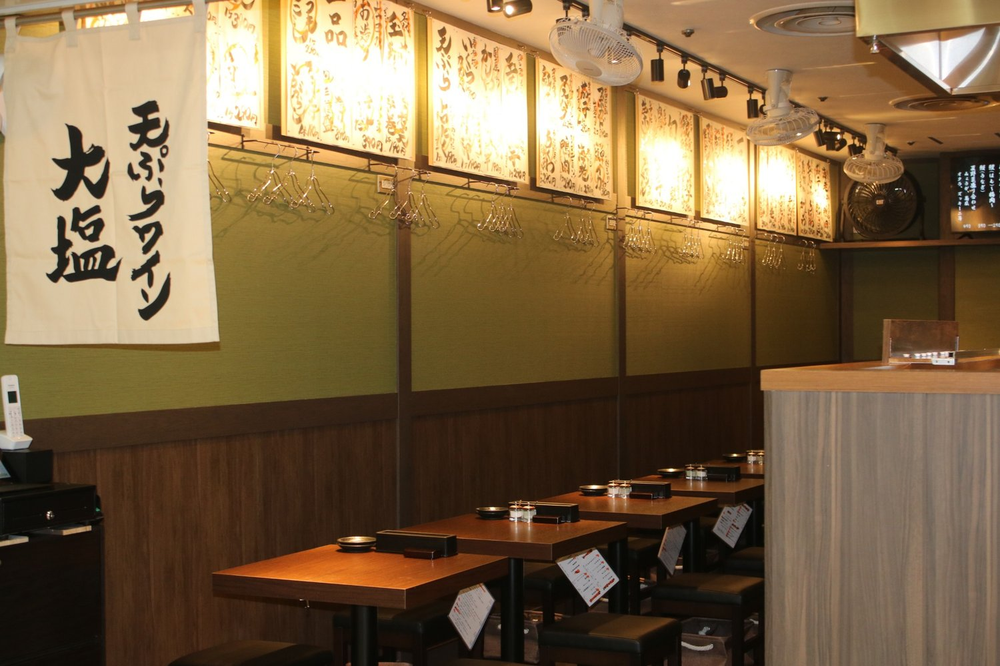
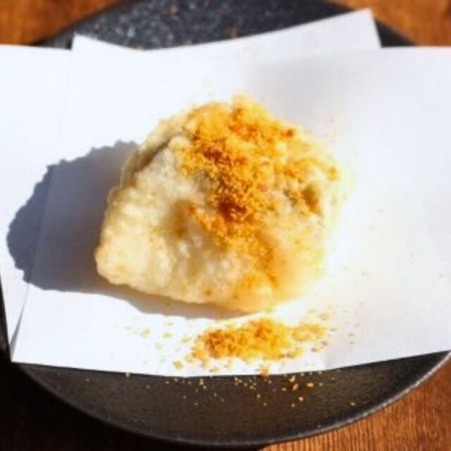
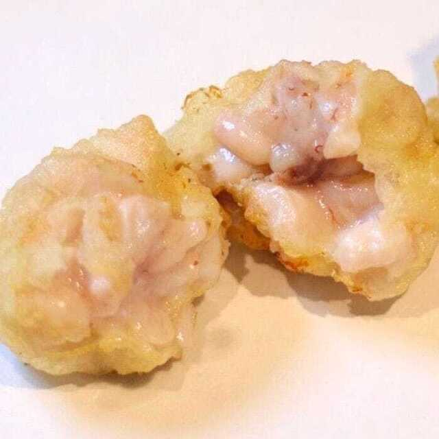
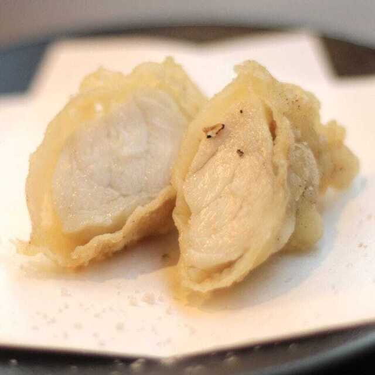
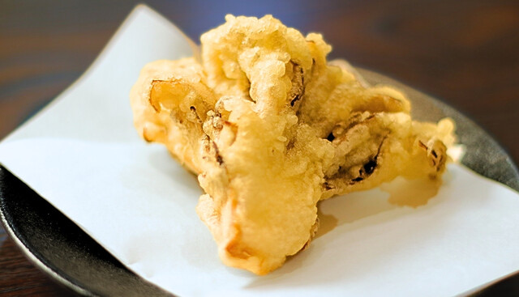
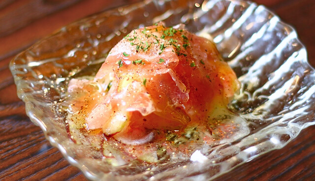
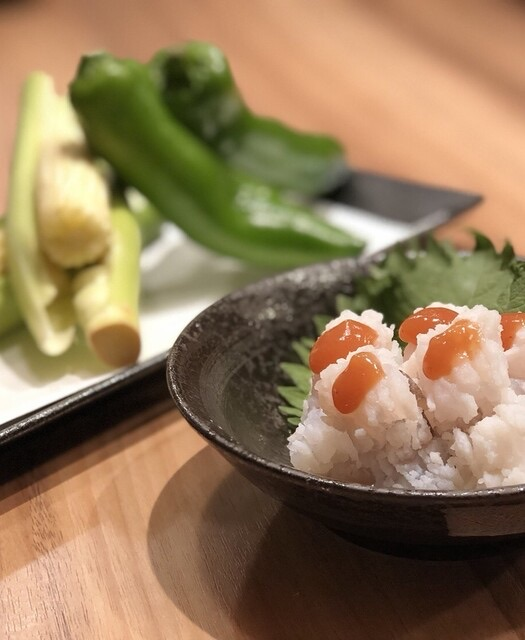
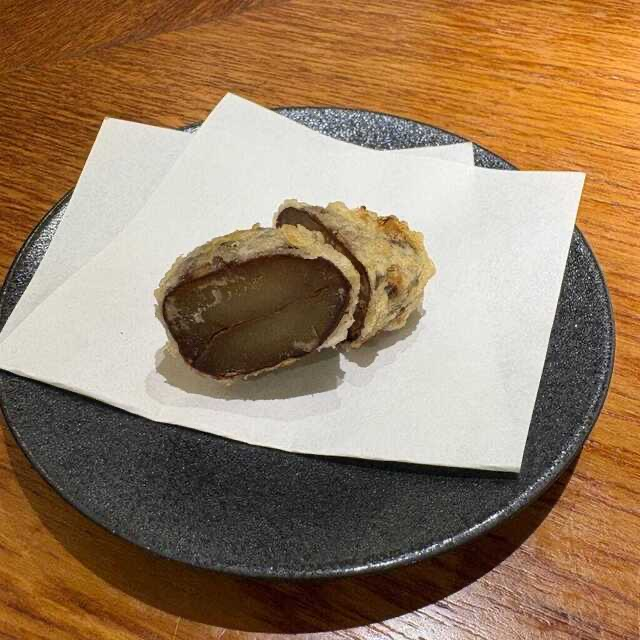
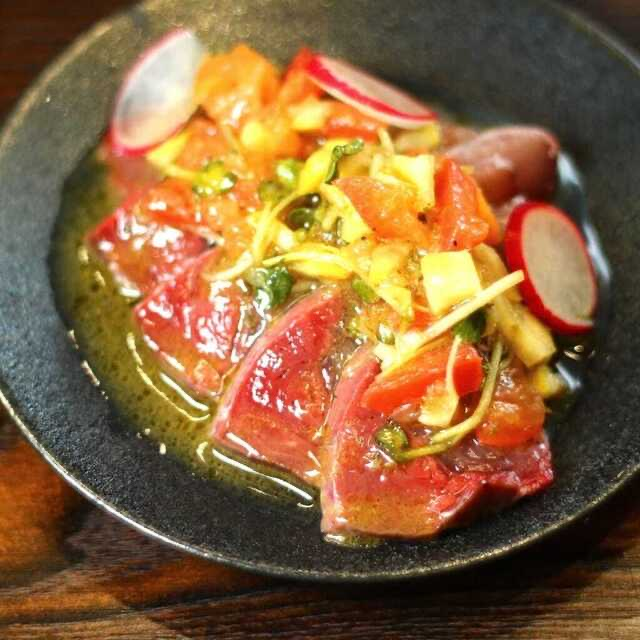
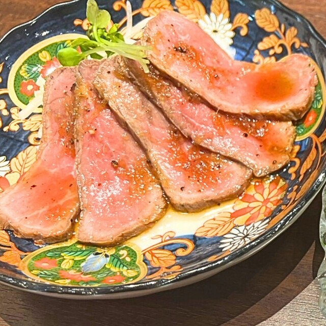

 우메다 지역
우메다 지역
오사카역앞 제3빌딩점
오사카역앞 제3빌딩점의 제철 메뉴

타라~카라스미가케~ (대구 카라스미 토핑 튀김)¥319
타라노 시라코텐 (대구 곤이 튀김)¥539
후구 ~트러플 소금~ (복어 튀김 트러플 소금)¥429
마이타케 (능이버섯 튀김)¥319 이치지쿠~고르곤졸라~ (무화과 고르곤졸라 튀김)¥429
이치지쿠~고르곤졸라~ (무화과 고르곤졸라 튀김)¥429
냉동 이치지쿠 생햄 모짜렐라¥539 계절 과일과 치즈 생햄말이¥429
계절 과일과 치즈 생햄말이¥429 덴푸라 오마카세 5핀 (덴푸라 셰프 추천 5종)¥1,100
덴푸라 오마카세 5핀 (덴푸라 셰프 추천 5종)¥1,100
키세츠노 덴푸라 코스 (계절 덴푸라 코스)¥3,300
단바구리 (단바 밤)¥319
부리노 카르파초 ~제노베제풍~ (방어 카르파초, 제노베제 스타일)¥649
로스트비프~그레이비 소스~¥649타라~카라스미가케~ (대구 카라스미 토핑 튀김)¥319타라노 시라코텐 (대구 곤이 튀김)¥539후구 ~트러플 소금~ (복어 튀김 트러플 소금)¥429마이타케 (능이버섯 튀김)¥319이치지쿠~고르곤졸라~ (무화과 고르곤졸라 튀김)¥429냉동 이치지쿠 생햄 모짜렐라¥539계절 과일과 치즈 생햄말이¥429덴푸라 오마카세 5핀 (덴푸라 셰프 추천 5종)¥1,100키세츠노 덴푸라 코스 (계절 덴푸라 코스)¥3,300단바구리 (단바 밤)¥319부리노 카르파초 ~제노베제풍~ (방어 카르파초, 제노베제 스타일)¥649로스트비프~그레이비 소스~¥649
매장 정보
- 주소
- 오사카시 기타구 우메다 1-1-3 제3빌딩 B2F
大阪市北区梅田1-1-3 第三ビルB2F
- 전화
- 06-6343-3545
영업시간・정기휴무
- 월・화・수・목
- 11:30 - 14:00 (라스트 오더 13:45)
17:30 - 21:30 - 금・공휴일 전날
- 11:30 - 14:00（라스트 오더 13:45）
17:30 - 22:45（라스트 오더 22:00） - 토
- 11:30 - 22:45 (라스트 오더: 음식 22:00, 음료 22:02)
- 일
- 11:30 - 21:30
- 정기휴일
- 연중무휴